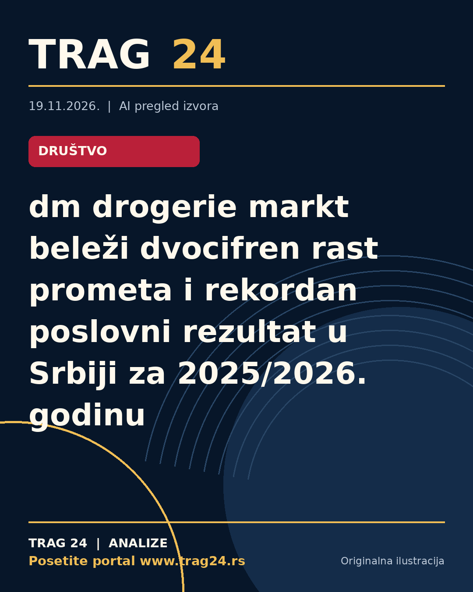

dm drogerie markt beleži dvocifren rast prometa i rekordan poslovni rezultat u Srbiji za 2025/2026. godinu

ŠTA SE DOGODILO
Kompanija dm drogerie markt završila je poslovnu 2025/2026. godinu sa ostvarenim prometom od 57,4 milijarde dinara uz rast broja kupovina od 15,15% u odnosu na prethodnu godinu. Tokom iste godine otvorene su dve nove prodavnice i modernizovano je 12 postojećih, što ukupno obuhvata 135 objekata u 40 gradova širom Srbije. Ukupne investicije iznosile su 1,41 milijardu dinara. Na nivou dm Grupe, koja posluje u 14 zemalja, ostvaren je promet od 20,98 milijardi evra.
HRONOLOGIJA
U poslovnoj 2025/2026. godini dm je nastavio sa razvojem i širenjem svoje maloprodajne mreže kroz otvaranje novih objekata i modernizaciju postojećih. Na početku 2026. godine evidentirano je povećanje prosečne bruto plate zaposlenih za 10%. Tokom godine realizovane su i brojne društveno odgovorne inicijative, kao i aktivnosti usmerene na digitalizaciju i unapređenje korisničkog iskustva, uključujući uvođenje AI prevodioca i online poručivanje poklon-kartica za pravna lica.
ŠTA NAVODE IZVORI
Svi izvori ističu dvocifreni rast prometa i značajno povećanje kupovina, kao i stabilnost cena proizvoda, gde se navodi da su cene više od 14.000 proizvoda održavane bez promene u proseku duže od 13 meseci, što je ispod opšteg inflatornog trenda. Naglašava se ulaganje u zaposlene, inovacije, kao i odgovorno korišćenje resursa. Takođe, istaknute su brojne aktivnosti u oblasti društvene odgovornosti i održivosti, uključujući uvođenje solarnih panela i opreme za praćenje potrošnje energije i vode u prodavnicama.
ŠTA JE POTVRĐENO
Potvrđeno je da je dm zadržao skoro nepromenjene cene u odnosu na opštu inflaciju od 2,81%, sa porastom cena od samo 0,34%. Zvanični podaci potvrđuju da dm zapošljava više od 2.400 ljudi u Srbiji i da kontinuirano ulaže u povećanje plata i unapređenje uslova rada. Takođe, potvrđene su investicije od 1,41 milijardu dinara i realizacija društveno odgovornih projekata sa izdvojenih 70,52 miliona dinara. Sertifikat ISO 50001 za upravljanje energijom produžen je do novembra 2028. godine.
ŠTA NIJE POTVRĐENO
Nema kontradiktornih ili nepotvrđenih tvrdnji u dostupnim izvorima. Informacije o navedenim podacima o broju zaposlenih, prometu, investicijama, rastu cena i društvenim aktivnostima su konzistentne u svim analiziranim tekstovima.
ŠTA OSTАJE OTVORENO: Iako su dostupni podaci detaljni glede poslovnih rezultata, investicija i društvene odgovornosti, nije poznato kako će se planovi kompanije razvijati u narednim godinama, posebno u pogledu daljeg otvaranja novih prodavnica i uticaja inflacije na buduće cenovne politike. Takođe, detalji o uticaju digitalnih inovacija na dugoročno ponašanje potrošača i tržišnu poziciju dm-a ostaju tema za dalje praćenje.
Izvori
- https://nova.rs/vesti/biznis/dvocifren-rast-prometa-uz-vise-od-190-miliona-prodatih-proizvoda-dm-belezi-jos-jednu-rekordnu-godinu/
- https://biznis.telegraf.rs/info-biz/4435931-dvocifren-rast-prometa-uz-vise-od-190-miliona-prodatih-proizvoda-dm-belezi-jos-jednu-rekordnu-godinu
- https://www.blic.rs/biznis/dm-ostvario-574-milijarde-dinara-prometa-u-srbiji-evo-sta-to-znaci-za-kupce/vfk6kvp
Ova analiza je pripremljena uz pomoć veštačke inteligencije na osnovu javno dostupnih izvora. Navodi izvora nisu nužno nezavisno potvrđeni.